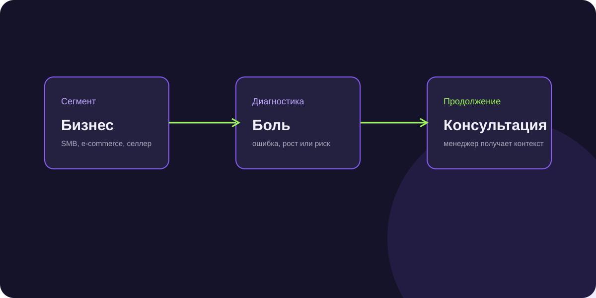

Клиенты для бухгалтерских услуг: как находить бизнес с реальной потребностью
Клиенты для бухгалтерских услуг редко принимают решение после одного холодного сообщения. В кейсе разговор строился вокруг роста, ошибок, маркетплейсов, налоговых рисков и перегрузки текущего подрядчика.

Короткий ответ
Вместо общего оффера «возьмём бухгалтерию на аутсорс» задавали вопрос по текущей ситуации бизнеса. AI уточнял формат компании, систему учёта и готовность обсудить проблему со специалистом.
Кого искали
Основными сегментами были предприниматели, малый и средний бизнес, e-commerce и селлеры маркетплейсов. Для последней группы важны комиссии, отчёты площадок, число операций и сведение данных.
С какой боли начинали
В диалоге проверяли, справляется ли бухгалтерия с ростом, возникают ли вопросы по маркетплейсам, были ли ошибки или требования, хватает ли собственнику прозрачности и нужна ли вторая проверка.
Как AI квалифицировал интерес
Ассистент уточнял формат бизнеса, текущую систему учёта, наличие штатного бухгалтера или аутсорса, конкретную проблему и готовность обсудить её со специалистом.
Реальная проблема и готовность показать ситуацию
Лид не обязан был уже принять решение о смене подрядчика. Достаточно было обозначить риск, запросить второе мнение или согласиться на консультацию.
Результат
Кампания принесла 77 лидов при CPL 520 ₽. Менеджер получал сформулированную проблему и мог начать консультацию с контекста, а не с общей презентации бухгалтерской услуги.